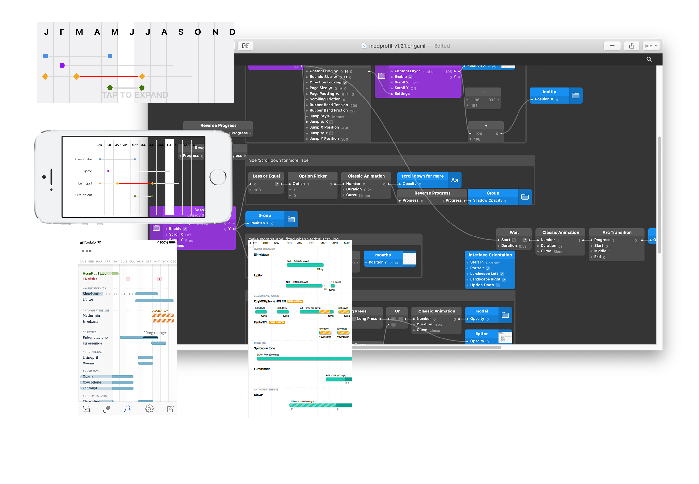

Cureatr / Mobile medication reconciliation
A medication history
you can make sense of.
- Role
- Lead UX Designer
- Period
- 2016–2019
- Product
- Mobile medication reconciliation
- Reach
- 20+ hospital systems nationally
- Team
- UX Researcher · Product Manager / Nurse Practitioner · Mobile Developer
The problem
Before examining a patient, a clinician needs to know what they’re taking. The answer may be spread across prescription records, paper printouts, and the patient’s memory. With several medications involved, even assembling the list can be a considerable task.
Sometimes a spouse arrives at the emergency department with a ziplock bag of pills. That is the starting point. The clinician still has to work out the history, the gaps, and the possible risks.
Our solution
We built a mobile application to bring that history into a view doctors and pharmacists could read at the point of care. The aim was practical: less time piecing together scattered information, and a clearer picture of what the patient was taking.

The central design decision
I organized the medications into a horizontal timeline. A clinician could scroll through the history and see drug interactions and controlled substances in context. Time gave the information a useful order: what came before, what was happening now, and where a gap appeared.
From paper to point of care
Making the interaction real.
- 01Understand the workflow
Paper records and medication history at the point of care.
- 02Prototype and test
Use Origami to test the mobile interaction with clinicians.
- 03Refine and ship
Bring the timeline and contextual risk indicators into the iOS experience.
Research in the field
The UX researcher and I took the prototype to hospital staff around New York. We needed them to try the interaction, and our browser prototypes weren’t doing it justice. I learned Origami so we could put something in their hands that behaved more like the iOS product we intended to build.

What we learned
Clinicians took readily to the horizontal scrolling and valued having medication risks visible in the timeline. We also learned that most of the staff we met used iOS. That gave us a useful constraint, based on the people who would use the product.
The system behind the screen
The timeline depended on the medication data underneath it. Two data engineers worked with that data, while our product manager brought clinical expertise as a nurse practitioner. As lead designer, I translated that complexity into an experience clinicians could interpret quickly at the point of care, working alongside our UX researcher and mobile developer.
1 · Target data
Reference Data
- RxNorm
- FDA NDC
- Drug Knowledge
2 · Target sources
Patient Data Sources
- Pharmacy Feeds
- EHR
- State PDMP
3 · Centralize and synthesize
Cureatr Engine
Normalize and reconcile patients medication history from the data sources
- Processes Patient Medical Records
- Checks Safety
4 · Share + present
Clinician Mobile App
Display Patient’s medication history in the healthcare facility
- Up-to-date records
- Warns of opioid abuse
- Warns about potential drug interactions
Shipped iOS product
20+ hospital systems
Used nationally for mobile medication reconciliation.
A later chapter · 2024
Years after this work, AssureCare acquired technology from Cureatr and SinfoniaRx to expand its medication-management capabilities. Read AssureCare’s announcement ↗
What I learned
How I learned to design for
complex real-world workflows.
This project taught me to pay attention to the shape of the work. A medication history unfolds over time; a clinician needs to see the relationships within it. The timeline gave us a way to make those relationships easier to read.
The prototype mattered for the same reason. When clinicians could use something that behaved like the intended product, their feedback became more useful. Learning a new tool was a small part of the project, but it helped us ask a better question.
I also learned restraint. Color, animation, and unfamiliar interactions ask for attention, and clinicians already have plenty competing for theirs. A playful treatment that works in a consumer product can feel distracting or unfamiliar in a clinical setting. With decisions that can carry life-or-death consequences, the interface needs to feel calm and predictable. I learned to reserve visual emphasis for meaningful information, use motion only when it helps explain a change, and respect the habits of the people doing the work.